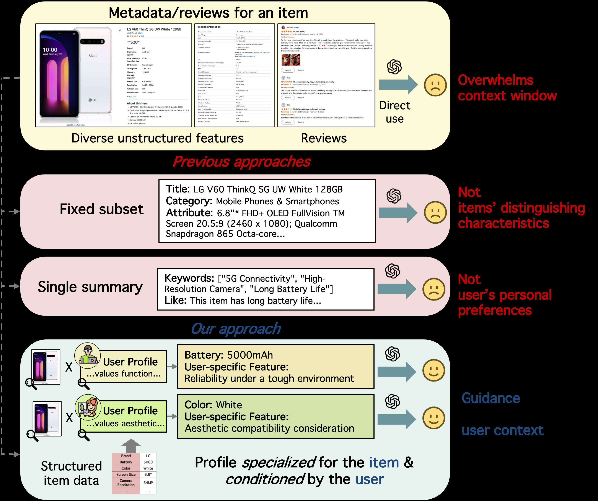
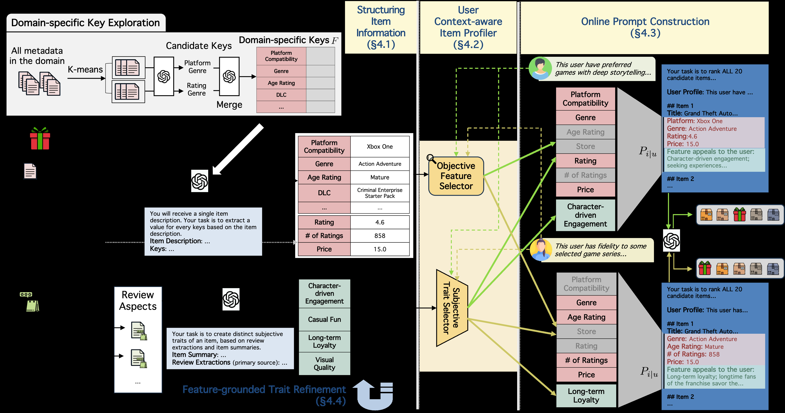
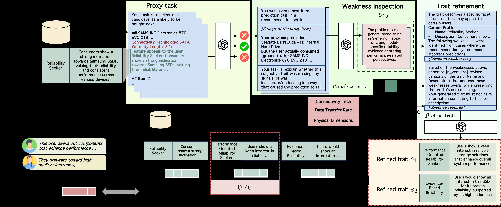
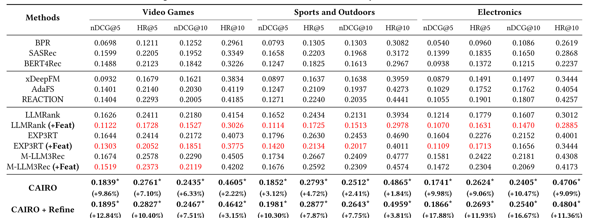
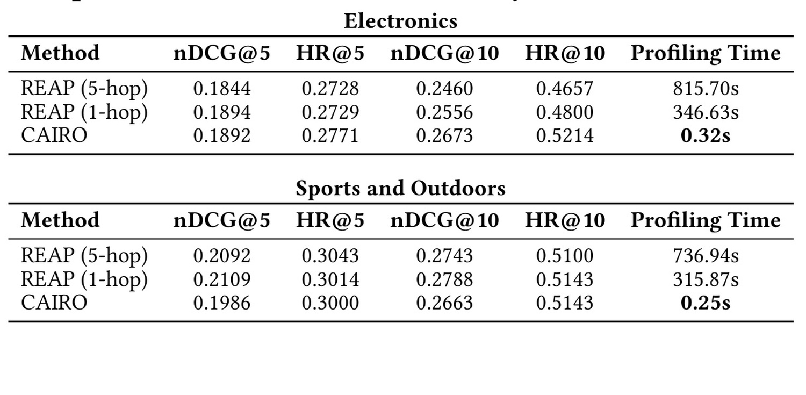
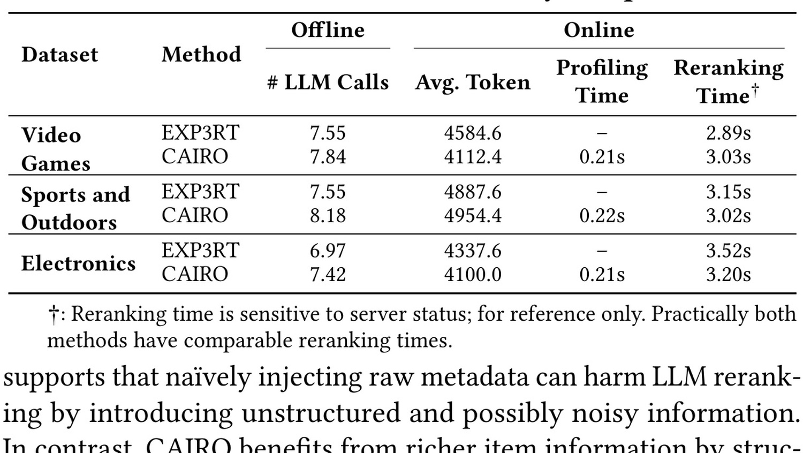
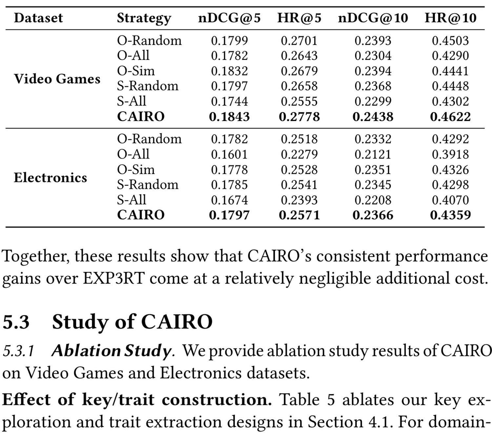
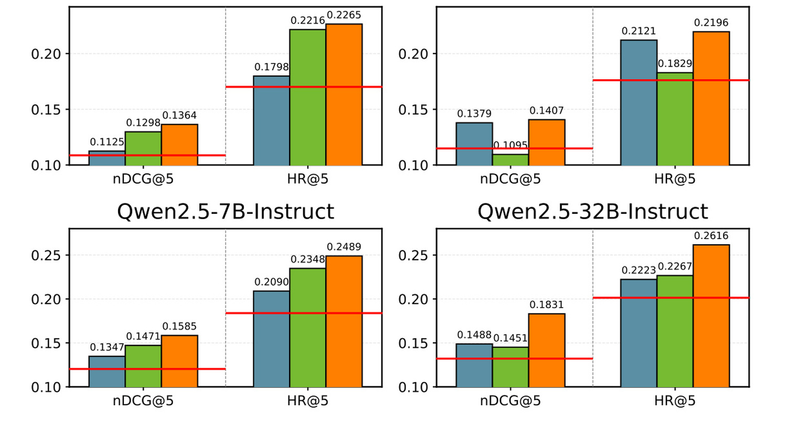

这篇 CIKM 2026 论文 Profiling What Matters: Context-Aware Item Profiles from Large-Scale Metadata for LLM Recommenders 由高丽大学 Dojun Hwang、Seunghan Lee、SeongKu Kang 与 KT Corporation 的 Cheonyoung Park、Sara Yu 合作完成。作者提出 CAIRO（user Context-Aware Item pROfiling）：先把庞杂商品元数据和评论整理成“客观特征 + 主观特质”，再以轻量选择器为每个用户—物品对挑出真正影响当前决策的证据，最后把精简后的物品画像交给通用 LLM 重排。官方实现已公开于 GitHub: rgbeing/CAIRO，包含 extraction、profiler、refinement、reranking 四个模块和论文全部 prompt 模板。
这篇工作的核心不是让 LLM 看见更多商品信息，而是证明“未经选择的信息增量可能比没有信息更糟”：画像必须同时对物品有区分度、对用户有针对性，并且能在服务时以低成本生成。
1. 背景和问题
1.1 LLM 重排已经会理解用户，却仍然不懂“这个物品对这个人意味着什么”
现代推荐系统通常是多阶段链路：召回器先从全量物品中找到候选集合，轻量排序模型继续压缩候选，最后由能力更强、成本更高的模型做精排或重排。LLM 进入最后一层后，优势并不只是语言更流畅，而是它能把用户历史、物品描述和常识知识放进同一个推理上下文，理解“用户最近连续购买露营装备，所以这款具备低温续航与防水外壳的电源更相关”之类传统 ID 模型很难显式表达的关系。
为了让 LLM 理解用户，已有工作大量研究 user profiling：把行为序列、评论、人口属性或长短期兴趣总结成紧凑用户画像。原始交互只是“买了什么”，画像进一步尝试解释“为什么买、喜欢什么、讨厌什么、当前处于什么使用情境”。然而物品侧往往仍停留在标题、品牌、类目等少量固定字段，或者为每件物品生成一份对所有用户都相同的静态摘要。于是系统出现明显不对称：用户被描述得越来越细，物品却仍是一张不会因用户变化而变化的说明书。
这个缺口在真实商品域尤其严重。一件电子产品可能有数十至数百个字段，既包括价格、重量、电压、材料等结构化值，也包括埋在长描述中的兼容系统、续航、适用场景；评论又会补充舒适性、品牌忠诚、耐用性、使用门槛等主观经验。对关注音质的人，耳机的主动降噪和驱动单元重要；对 Google 生态用户，Android 兼容与 Assistant 支持更重要。若所有人都收到同一份摘要，模型就必须从一堆“可能有用”的信息中自行寻找证据；如果直接把全部字段塞进去，噪声、上下文长度和位置偏差又会削弱推理。
1.2 三个彼此耦合的困难
论文把问题分成三个挑战。C1：数据量大且不规整。 同一字段可能由不同供应商写成不同名称，值可能藏在表格、项目符号或自由文本里。将全部元数据线性化，不仅消耗上下文，还会触发长上下文中的“中间信息遗失”与注意力分散。C2：重要性依物品而变。 显示器的 60Hz 刷新率很普通，对 360Hz 电竞显示器却是核心区分点；固定字段模板无法判断何时一个字段只是背景、何时它构成卖点。C3：同一物品的重要性又依用户而变。 AirPods Max 对 Apple 生态用户的价值可能是无缝协同，对通勤用户则是降噪。物品画像因此不能只做 item-aware，还必须做 user–item-aware。

Figure 1 将三类困难放进一条直观链路。左侧的 LLMRank 只拿标题，输入短但物品理解薄；中间路线给每件物品一份静态画像，即使画像本身比标题丰富，也不随用户变化；最直接的“Full Description”虽然保留全部原始信息，却把选择成本转嫁给在线 LLM。右侧 CAIRO 先离线把原始描述整理为结构化知识，再针对用户 A 与用户 B 分别选择不同的 objective features 和 subjective trait。图中同一候选物品出现两份不同画像，不是改写事实，而是改变证据的选择和组织：稳定事实仍来自同一商品，主观特质仍被评论与客观字段约束，只是对当前用户更显著的部分被放到前景。这个区分很重要——CAIRO 不是个性化生成商品事实，而是个性化压缩已验证事实。
已有方案分别只解了一部分问题。仅用标题无法覆盖细粒度差异；人工挑选品牌、类目等少量字段不具备跨域扩展性；关键词、liked/disliked points 或动机摘要可以压缩内容，却通常按固定模板生成，仍是“一物一画像”；在线 Agentic RAG 可以反复决定需要什么、再检索证据，但每次重排都要多轮 LLM 调用，难以满足服务延迟。CAIRO 的目标因此可以概括为：离线支付理解大规模元数据的成本，在线只做轻量、可并行的用户条件选择。
1.3 问题形式化与论文真正优化的对象
记用户集合为 $\mathcal U$、物品集合为 $\mathcal I$。用户 $u$ 有交互历史 $\mathcal H_u$，物品 $i$ 有原始元数据 $\mathcal M_i$ 与评论集合 $\mathcal R_i$。召回器为用户给出候选集合 $\mathcal C_u$，LLM 重排器接收历史物品画像、候选物品画像和用户画像 $P_u$：
过去工作主要优化 $P_u$ 或重排 prompt $p_{\mathrm{rerank}}$，CAIRO 则定义一个用户条件物品画像函数：
其中 $P_{i\mid u}$ 应足够短以适应上下文预算，足够细以保留物品特有卖点，又能随用户上下文变化。这里的目标不是直接训练 LLM 参数，而是构造更好的输入证据。因此论文属于 prompt augmentation / profiling 路线：重排 LLM 保持通用能力，画像层承担信息清洗、压缩和个性化。
2. 方法
2.1 总体架构：离线结构化、离线训练选择器、在线轻量拼装
CAIRO 分成三层。第一层把原始元数据和评论转为统一字典：客观部分记录可以被原文证据支持的事实，主观部分记录从评论中归纳的多面用户感知。第二层训练或准备两个选择器：客观特征选择器从协同交互信号学习某个字段对用户—物品对的预测价值；主观特质选择器用用户画像与 trait 的语义相似度挑出最贴合的一面。第三层在服务时批量处理历史物品和候选物品，把所选 trait、客观特征及 trait 的支持证据拼成 $P_{i\mid u}$，随后只调用一次重排 LLM。

Figure 2 是整篇论文最重要的方法图。左半部分的 Offline Structuring 把 metadata 送入 domain-specific key exploration，再按这些键抽取 objective features；评论先被解析为购买目的、使用场景、满意度和类目偏好等 review aspects，随后结合客观特征生成多个 subjective traits。中间的 Context-aware Profiler 有两条并行路径：上路用可学习权重从大量客观字段中选 top-$k$，下路用用户画像与 trait embedding 的余弦相似度选一个主观特质。右侧 Online Prompt Construction 展示同一游戏面对两个用户时的差异：一位用户得到角色驱动与平台兼容证据，另一位得到长期 IP 忠诚和年龄分级证据。图中 LLM 调用主要位于离线结构化阶段，在线画像只需控制器前向、向量相似度和字符串拼装，这正是方法区别于在线 Agentic RAG 的成本边界。
从数据流看，训练与推理并非完全相同。结构化字典、特征 embedding、trait embedding 和选择器参数都在离线准备；客观选择器需要交互标签训练，trait 选择器本身不额外训练；在线请求到来后才注入当前用户画像并得到用户特定选择。可选 refinement 也是离线步骤，不增加每次在线请求的 LLM 次数。
2.2 领域键探索：先统一“有哪些字段”，再提取“每件物品的值”
直接要求 LLM 根据“电子产品”这个域名列字段，容易遗漏子类或凭常识幻觉。CAIRO 采用数据驱动策略：先把每件物品的原始元数据线性化，用 BGE-M3 编码后做 $k$-means 聚类。每个簇代表相近物品子类，从簇 $\mathcal I_j$ 中随机抽样 $\widetilde{\mathcal I}_j$，让 LLM 依据真实样本提出候选键：
论文设置 $k_{\mathrm{items}}=20$。聚类并不是最终推荐模型的一部分，而是覆盖率工具：游戏簇可能提出多人模式、DLC、年龄分级，运动用品簇可能提出材料、尺寸、适用运动；先分簇再提键，比让 LLM 凭域名一次性猜字段更容易覆盖长尾子类。
随后 LLM 对所有候选键做相关性复核与语义归并：
这里会把 Water-proof 与 Water-resistance 之类同义字段合并，同时删除与决策无关的键。作者刻意不按频率过滤，因为低频字段可能正是少量物品的决定性卖点。最终每个数据域得到约 30–50 个 domain-specific keys。这个设计把 schema discovery 从人工维护变成了“样本覆盖 + LLM 归并”，但 schema 仍是域级共享的，便于后续选择器在固定维度上学习。
2.3 客观特征抽取：只在有证据时填值
给定统一键集合 $\mathcal F$，CAIRO 为每个物品构造客观特征字典：
关键约束是 evidence-first：LLM 先在原始 metadata 中确认支持证据，找到才填值，否则输出 null。这使字典能同时吸收原本已结构化的价格、材料、品牌，也能从描述句中抽出合作模式、兼容协议等隐藏字段，却不允许用参数知识补全缺失值。于是“结构化”不是把空白都猜满，而是把异构表达映射到统一槽位，并保留缺失性。
在实现上，不同模态字段随后使用不同编码：数值先分桶，类别值使用 embedding，文本值由 BGE-M3 编码并投影到统一维度。这个细节决定了客观选择器不仅能处理一句话描述，也能处理离散品牌与连续价格；统一的是选择器看到的向量维度，不是把所有字段粗暴转成同一种字符串。
这一阶段最昂贵，因为要对全部物品和多个字段调用 LLM，但它完全离线。上线后新增物品需要增量运行抽取，schema 变化则可能触发全量或局部重算。论文代码将该阶段放在 extraction 目录，并公开了 explore-keys、reassess-merge、extract-obj 等 prompt，复现者不必从正文反推模板。
2.4 主观特质构造：从评论方面到多面 trait，而不是一份平均摘要
客观特征回答“商品是什么”，评论更擅长回答“人们怎样使用和感受它”。CAIRO 先把每条评论 $r$ 解析成结构化方面 $a_r$，包含购买目的、使用情境、满意程度和类目偏好；没有证据的方面同样设为 null。然后把某件物品的评论方面集合与客观特征联合交给 LLM：
输出不是单一总结，而是 $3$–$7$ 个彼此不同的 subjective traits。形式上：
$t_{i_m}$ 是 trait 标题，$d_{i_m}$ 是解释，$\mathcal O_{i_m}\subseteq\mathcal O_i$ 是直接支持该 trait 的客观字段。比如同一游戏可以同时具有 Character-driven Engagement、Long-term Loyalty、Co-op Social Play 等面向；前者由角色发展与评论体验支持，后者由系列 IP、评论中的老玩家表达支持。约束每个 trait 绑定约两个客观特征，是为了让主观归纳仍可追溯到商品事实。
为什么不直接总结成一段？因为平均摘要会把互相独立的偏好揉在一起，最终仍然对所有用户相同。多面 trait 相当于先建立一个有限候选集合，在线阶段只需选最匹配用户的一面。它比在线自由生成稳定，又比固定 liked/disliked 模板更能覆盖不同感知维度。不过 trait 毕竟经过 LLM 推理，仍可能偏离真实用户意图，因此作者在后面增加 refinement，而没有把首次生成当作可靠终点。
2.5 客观特征选择器：用协同预测贡献学习“什么对这个用户重要”
CAIRO 的客观选择不是做文本相似度，而是从交互标签中学习字段对预测的贡献。先构造轻量 backbone recommender $g_{\mathrm{RS}}$。用户画像 $P_u$、用户 ID、物品 ID 和每个客观字段分别编码为 $d$ 维向量：
控制器 $g_w$ 接收整段拼接表示，为所有字段及辅助输入生成 softmax 权重：
再把权重乘回对应 embedding：
符号解释：$y_{ui}\in\{0,1\}$ 表示用户 $u$ 是否与物品 $i$ 交互，$\widehat y_{ui}$ 是预测概率；$\mathbf h_{f_j}$、$\mathbf h_{P_u}$、$\mathbf h_u$、$\mathbf h_i$ 分别表示字段、用户画像、用户 ID 和物品 ID 的 $d$ 维向量，$w_{f_j}$ 是控制器分配给字段 $f_j$ 的权重，$g_{\mathrm{RS}}$ 是轻量推荐主干。
模型用隐式反馈的二元交叉熵联合训练 backbone 与控制器：
若一个字段能帮助区分某用户会不会与某物品交互，训练梯度就会促使控制器提高其权重；若字段只是普遍存在的噪声，权重不会稳定上升。最终对当前 $(u,i)$ 做 top-$k$ pooling：
这与“用户画像和字段文本做余弦相似度”有本质差异。语义相似只识别字面接近，例如用户提过“音质”就选 audio 字段；协同控制器还能利用组合模式，学习某类历史与品牌、兼容系统、价格共同出现时的预测价值。它也同时看到用户与物品 ID，因此存在吸收流行度或身份捷径的风险，但实验中的 O-Sim、O-Random、O-All 对照至少说明协同权重比这些简单选择更有效。
2.6 主观 trait 选择器：在已经压缩的候选面向上做语义匹配
主观 trait 已经是一段较完整、可读的语义描述，因此作者没有再训练复杂控制器，而是比较用户画像与各 trait 的文本 embedding：
$\mathbf e_{P_u}$ 是用户画像 embedding，$\mathbf e_s$ 是某个 trait embedding。选中的 $s_{u,i}$ 成为个性化物品画像的主观部分。这个设计简洁且可预计算：物品侧 trait embedding 离线缓存，在线只编码或读取用户画像向量并做几个点积。
客观与主观两路为什么采用不同选择机制？客观字段短、异构且数量多，单独看语义往往无法判断预测贡献，适合用协同标签训练；trait 已由 LLM 把多个评论方面压成高层语义，且每件物品只有 3–7 个，余弦匹配已经足够便宜。两路最终不是互相替代：客观选择器提供预测性字段，trait 选择器提供更接近“购买动机与使用情境”的整体视角。
2.7 在线 prompt 构造：一次批处理完成历史和候选的用户特定画像
请求到来后，CAIRO 把历史与候选合并为批次 $\mathcal B_u=\mathcal H_u\cup\mathcal C_u$。客观路径对所有物品构造输入矩阵 $\mathbf E_u=[\mathbf e_{ui}]_{i\in\mathcal B_u}$，一次控制器前向得到权重矩阵并逐行取 top-$k$；主观路径把每件物品的 trait embedding 与用户画像比较，取一个最高相似 trait。然后补上这个 trait 自带的 supporting features $\mathcal F_{s_{u,i}}$，最终画像为：
论文设置客观选择器取四个字段，trait 通常再携带约两个支持字段，去重后每个画像平均约五个客观特征。最终 prompt 为：
这条链路没有在线 LLM profiling 调用。所有 item embedding、字典和选择器都已准备好，矩阵计算可在 GPU 上并行。需要注意，“在线开销低”不等于整套系统便宜：结构化全量 metadata、解析评论与生成 traits 的离线 LLM 成本依然存在；物品快速变化时还要设计增量更新与缓存失效策略。论文衡量的是每个测试用户的平均调用和延迟，尚未覆盖大规模生产环境的存储、更新吞吐与 P99。
2.8 Feature-grounded Trait Refinement：用预测失败反向诊断画像缺陷
首次 trait 来自评论归纳，可能写得自然却抓错重点。CAIRO 的可选 refinement 用交互预测失败提供反馈。对物品 $i$ 的某个 trait $s$，作者收集以 $i$ 为最后物品、且该用户会选择到 $s$ 的历史集合 $\mathcal H_{i,s}$。在简化 next-item proxy task 中，把 $i$ 与四个随机负例放进候选；如果 LLM 没选中真实下一物品 $i$，就把该历史记为错误案例 $\mathcal E_{i,s}$。

Figure 3 展示 refinement 如何避免“让 LLM 随便重写”。原 trait 可能只强调品牌可靠性，但错误用户历史显示他们更关注性能；LLM 先对每个失败案例诊断缺失点，再查看客观字段中是否存在对应证据，最后才生成候选修订。右侧不是直接采用第一份改写，而是把原 trait 与候选一起放入选择，用相关用户画像的平均 embedding 做对齐评分。图中红色性能信号只有在 objective features 能支撑时才进入新 trait，体现了 feature-grounded 的含义：交互错误决定“往哪里改”，客观特征决定“允许写什么”。
每个错误案例的诊断为：
汇总诊断、原 trait 与客观特征，采样 $N_{\mathrm{cand}}=2$ 个候选：
最后在原 trait 和两个候选中，选择与 $\mathcal H_{i,s}$ 相关用户平均画像 embedding 最接近的一项。保留原 trait 作为候选很关键：如果诊断噪声导致新版本更差，系统仍可不改。该过程借鉴 prompt optimization 的“错误收集—缺陷诊断—候选改写—外部选择”范式，但评价信号仍是 embedding 相似度与代理任务，不是端到端可微优化。它改善了主结果，却也引入额外离线 LLM 调用和随机负例依赖。
3. 实验结果
3.1 数据、基线与评测协议
实验使用 Amazon Reviews 2023 的 Video Games、Sports and Outdoors、Electronics 三个域，分别包含 263,782、232,923、223,173 次交互；用户约 30K，物品约 9.2K、19.5K、13.7K。三个域共有 11 个 common fields，optional fields 分别多达 266、964、705 个，适合检验“大量异构元数据”这一设定。作者采样约 20–30 万交互并做 user/item 5-core，过滤无标题或无 metadata 的物品。最后一次交互做测试、倒数第二次做验证，其余训练；画像只使用训练数据生成，避免泄漏。
重排候选固定为 20 个：一个真实下一物品与 19 个由 BPR-MF 采样的负例，顺序打乱以减轻位置偏置。指标为 $\mathrm{HR}@K$ 和 $\mathrm{nDCG}@K$，$K\in\{5,10\}$。LLM 方法统一使用 GPT-4o-mini，重排温度 0.2，其余生成阶段温度 0.9；文本 embedding 使用 BGE-M3。基线覆盖传统 BPR/SASRec/BERT4Rec，特征模型 xDeepFM/AdaFS/REACTION，以及 LLMRank、EXP3RT、M-LLM3Rec。对后三者还构造 +Feat 版本，把额外非空 optional fields 线性化后直接加入 prompt，用来检验“给更多字段”是否足够。
3.2 主结果：选择后的丰富信息有效，未经选择的丰富信息有害

Table 1 的证据可以分三层读。第一，CAIRO 在三个数据集、四个指标上全部优于最强基线，带 refinement 的版本又全部优于未细化版本。相对各列最强既有方法，CAIRO + Refine 在 Video Games 的提升为 3.15%–12.84%，Sports and Outdoors 为 3.81%–10.30%，Electronics 为 11.36%–17.88%；其中更靠前的 nDCG@5 和 HR@5 往往增益更大，说明结构化画像主要帮助 LLM 在榜首附近做细粒度区分。第二，未 refine 的 CAIRO 已稳定领先，证明核心贡献来自结构化与用户条件选择，而不是依赖后处理才能成立。第三，也是最值得记住的结果：LLMRank、EXP3RT、M-LLM3Rec 的 +Feat 版本几乎全面退化，红色数字甚至经常低于只用标题的 LLMRank。以 Video Games nDCG@5 为例，LLMRank 为 0.1626，直接加字段后降到 0.1122；EXP3RT 从 0.1644 降到 0.1303。数据由此反驳“上下文能放下就尽量全塞”的朴素做法。
不过这些提升是相对百分比，不应与绝对点数混淆。Electronics 上 CAIRO + Refine 的 nDCG@5 为 0.1866，相对 M-LLM3Rec 的 0.1581 提高 17.88%，绝对差是 0.0285。候选仅 20 个且负例来自 BPR-MF，结果不能直接外推到全库排序、工业多阶段链路或线上用户价值。作者给出显著性标记 $p<0.05$，但正文没有充分展开多重比较校正与每项方差，阅读时应把“一致领先”看得比单个最大百分比更重要。
3.3 与 Agentic RAG 对比：以预计算换掉在线多轮推理

Table 3 在 Electronics 与 Sports and Outdoors 各随机抽取 700 个测试用户，对比在线 Agentic RAG。Electronics 上，CAIRO 的 nDCG@5 为 0.1892，与 REAP 1-hop 的 0.1894 几乎持平，并在 HR@10 上达到 0.5214，高于 0.4800；画像时间却只有 0.32 秒，而一跳与五跳分别为 346.63 秒和 815.70 秒。Sports 上，CAIRO 的 nDCG@5 为 0.1986，低于 REAP 一跳的 0.2109，但 HR@10 同为 0.5143；时间为 0.25 秒，对方为 315.87 秒。这个对照支持的是“CAIRO 在小样本评测上以三数量级画像延迟优势取得有竞争力的效果”，而不是“CAIRO 在所有指标都优于 RAG”。
需要注意测量对象是为一个用户构造全部候选画像的平均时间，REAP 包含多次远程 LLM 调用，CAIRO 只做本地矩阵计算，天然存在系统实现差异。700 用户子集也不是完整测试集。即便如此，结果仍精准击中论文设计目标：若 profiling 位于在线重排链路，多轮 LLM 检索的几百秒延迟不可接受；提前把 item knowledge 结构化，再把请求时决策降为选择问题，是更接近服务化的路线。
3.4 离线与在线成本：多付一点离线调用，在线只增加约 0.2 秒

Table 4 将成本拆成离线和在线。每位测试用户折算的离线 LLM 调用数，CAIRO 比 EXP3RT 略高：Video Games 为 7.84 对 7.55，Sports 为 8.18 对 7.55，Electronics 为 7.42 对 6.97。最终 prompt token 并未系统增加：CAIRO 在 Video Games 与 Electronics 更少，在 Sports 略多。在线 profiling 额外约 0.21–0.22 秒；重排 LLM 时间两者接近，三域分别约 3 秒上下，且作者明确提醒该项受服务状态影响，仅供参考。
因此“低成本”应被准确解释为：相对 EXP3RT，CAIRO 把更多工作前移到离线，在线只增加轻量画像计算，没有增加额外 LLM 调用；它并非没有成本，也未证明在任意硬件上都是 0.2 秒。论文硬件为 Intel Xeon Gold 6338 与四张 RTX A5000，在线并行方式、batch 大小、缓存命中与服务拓扑会改变结果。生产复现应分别记录结构化吞吐、增量物品处理耗时、embedding 存储、profiling P50/P95/P99、重排 token 和远程 LLM 延迟，不能只复报平均值。
3.5 消融：全部提供与随机选择都不如上下文选择

Table 6 直接检验两个选择器。在 Video Games 上，完整 CAIRO 的 nDCG@5/HR@5 为 0.1843/0.2778；客观字段全量注入 O-All 降到 0.1782/0.2643，主观 traits 全量注入 S-All 降到 0.1744/0.2555。Electronics 的退化更明显：O-All nDCG@5 只有 0.1601，S-All 为 0.1674，而 CAIRO 为 0.1797。Random 也落后，说明收益不是“随便少给一点、上下文短了就好”。客观字段按用户画像语义相似度选择的 O-Sim 在 Video Games nDCG@5 达 0.1832，接近完整方法，却在其他指标仍不稳定，支持协同模式比纯字面相似更能捕捉字段贡献。
Table 5 虽未截图，结论同样重要。K-Frequency 只保留最常见键、K-MergeMore 更激进地合并稀疏键，通常都弱于完整域键策略，说明长尾字段不能只因低频被删；T-Single 每件物品只生成一个 trait，也会退化，说明用户对同一物品的感知确实具有多面性。个别指标并非 CAIRO 严格最优，例如 Video Games 的 K-MergeMore HR@10 为 0.4711，高于 CAIRO 的 0.4622；因此消融支持的是整体趋势，而非每个设计在每项指标上都不可替代。
3.6 跨模型泛化：画像不是只为 GPT-4o-mini 调出来的 prompt

Figure 4 在 Electronics 上把同一类画像用于 Llama3.2-3B、Llama3.1-8B、Qwen2.5-7B、Qwen2.5-32B。橙色 CAIRO 在四个模型的 nDCG@5 与 HR@5 上全部高于 LLMRank、EXP3RT 和 M-LLM3Rec；即使 3B Llama，CAIRO 也达到 nDCG@5 0.1364、HR@5 0.2265，高于标题基线的 0.1125/0.1798。32B Qwen 上 CAIRO 的 HR@5 达 0.2616，也明显高于其他画像方法。
这组结果说明结构化证据不是某个闭源 LLM 的 prompt 特例：小模型也能受益，甚至可能因为上下文选择替它节省了识别噪声的容量。但实验只覆盖一个数据域和四个 instruction models，没有比较不同上下文长度、量化版本或领域专用推荐 LLM；图中也未展示方差。更稳妥的结论是：CAIRO 画像具备初步的模型家族与参数规模迁移性，而不是“画像与 LLM 完全解耦”。
3.7 案例：同一副耳机，对功能用户和生态用户给出不同证据
Table 7 选择同一款 Google Pixel Buds Pro。Case 1 的用户画像强调设备保护和功能性，并多次批评舒适度与功能缺陷；CAIRO 选出 Active Noise Cancellation、11mm drivers、配件和“Comparative Evaluation” trait，把声音、降噪和总体功能置于前景，真实物品排到第 2。Case 2 的用户常使用 Chromebook 和 Google 设备，CAIRO 改选 Android 6.0 兼容、Google Assistant、Google 商店与 Brand Loyalty trait，物品排到第 1。两份画像共享商品事实，但信息前景完全不同，正好对应 $P_{i\mid u}$ 的定义。
EXP3RT 给两个用户同一份 liked/disliked 静态摘要，虽然摘要同时包含声音、ANC、Google 兼容和佩戴缺点，却分别只排第 19 与第 7。这一案例不能单独证明因果，因为排名还受其他候选与 LLM 随机性影响；它的价值在于把主结果和机制连起来：不是原摘要缺少相关事实，而是事实混在一起时，LLM 不一定知道当前用户最该看哪一组。CAIRO 做的正是 evidence prioritization。案例也暴露风险：用户画像若误判，选择器会把错误证据放大；因此线上系统需要保留原始依据、监控画像漂移，并允许在置信度低时回退到通用画像。
4. 总结
4.1 我的判断与可迁移价值
CAIRO 最值得保留的思想是把 item profiling 从“一件物品一份摘要”升级为“一件物品一个结构化知识库，再按用户构造证据视图”。客观特征确保事实性，多面主观 trait 承载评论里的使用情境，协同控制器判断哪些字段对交互预测有贡献，语义选择器把高层 trait 对齐到用户画像，refinement 再利用失败案例纠正主观归纳。它没有微调重排 LLM，也没有在请求时引入多轮 Agent，而是把昂贵推理前移、把在线任务降为向量选择与 prompt 拼装。这种“offline intelligence, online selection”设计很适合推荐服务。
对短视频推荐也有明确迁移：客观字段可以是作者、时长、题材、音乐、镜头语言与生产质量，主观 trait 可以来自评论中的情绪价值、信息密度、陪伴感和争议点；对广告排序，客观字段可对应商品与创意属性，trait 可对应利益点和人群感知；对 RAG，文档可先结构化成事实与观点，再按 query/user 选择证据。更一般地，论文提醒我们：上下文工程不是把检索结果尽量塞满，而是把“内容是否真实”“内容是否有区分力”“内容是否与当前决策相关”拆成不同模块治理。
4.2 局限、工程风险与复现建议
局限至少有六点。第一，只有三个 Amazon 域和 20 候选离线重排，没有线上 A/B、全库召回或多阶段反馈。第二，5-core 与过滤缺 metadata 物品会弱化冷启动，恰好避开真实系统最难的输入缺失。第三，结构化和 refinement 依赖 GPT-4o-mini，离线成本、prompt 漂移与模型版本复现仍是风险。第四，客观控制器使用用户/物品 ID，可能学习流行度捷径；论文没有做去 ID、去流行度或时间外推消融。第五，主观 trait 的“忠实性”主要靠 prompt grounding 与 supporting features，没有人工事实一致性标注。第六，平均 0.2 秒 profiling 不能代表大流量 P99，GPU batch、缓存、更新周期和存储成本尚未展开。
建议按以下顺序复现与扩展：
- 先运行官方 extraction 模块，在少量物品上人工审计 key 覆盖率、
null精度、同义字段归并与评论 trait 的证据一致性，再扩大数据。 - 固定同一重排 LLM 与候选集，对比 title-only、all-features、static profile、CAIRO，先复现“全量字段有害”和 Table 6 的选择器消融。
- 为客观选择器增加去 user ID、去 item ID、流行度分桶和时间外测试，确认权重真的学到字段贡献，而不是身份捷径。
- 把画像拆成可观测日志：记录候选字段、选择权重、最终 trait、supporting features、prompt token 和排名变化，便于线上归因。
- 对新增物品设计回退：没有评论时只生成客观画像；metadata 缺失时使用类目默认键但不补写未知事实；低置信用户画像时保留通用 trait 或混合多个 trait。
- 分别评估离线结构化成本和在线服务成本，至少报告每万物品 LLM 调用、重算周期、embedding 存储、P50/P95/P99 与重排总延迟。
- refinement 应采用严格时间切分，代理任务负例不能看到未来交互；同时比较“无 refinement、单次 refinement、多轮 refinement”，避免离线 LLM 成本无限扩张。
- 若迁移到短视频或新闻流，应把会快速变化的热度、时效与上下文状态留在在线特征中，不要固化进长期 item trait；静态知识与动态信号需要不同更新频率。
总体而言，CAIRO 的实验较有说服力地证明了一个方向：在 LLM 重排里，物品侧信息的组织与选择本身就是模型能力的一部分。它尚未证明工业规模的端到端收益，但已经给出清晰、公开且可复现的模块边界。对正在做 LLM4Rec 的团队，最务实的起点不是立刻复制全部 refinement，而是先建立“客观事实字典 + 多面 trait + 用户条件 top-$k$”最小闭环，再用线上日志判断是否值得支付更高的离线生成成本。